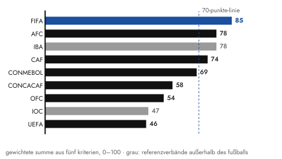
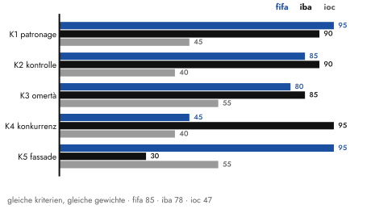
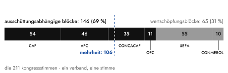
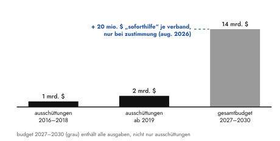
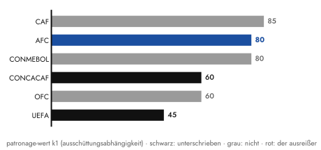
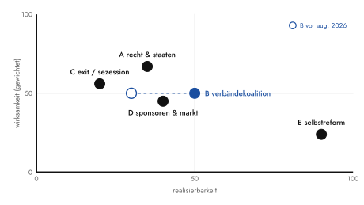

Warum der mächtigste Mann des Weltfußballs nicht stürzt: Die FIFA unter Infantino ist nicht der kriminellste Verband des Weltsports – aber der am „saubersten" mafiös organisierte. Maximale Herrschaft bei minimaler Angriffsfläche.
Kein Gericht hat Gianni Infantino je verurteilt, und vermutlich wird das so bleiben. Wer den Präsidenten des Weltfußballverbands verstehen will, sucht deshalb besser gar nicht erst nach Verbrechen. Verbrechen? Das wäre vielleicht auch nicht fair gegenüber der FIFA, von kriminellem Handeln zu sprechen. Versuchen wir es doch lieber analytischer anhand einer spezifischen Herrschaftstechnik. Und wie schön, dass es dazu auch ein passendes Instrumentarium aus der Soziologie gibt, das sich seit Jahrzehnten an einem Gegenstand geschärft hat: der Mafia.
1ein anruf genügt?
Juli 2026, Fußball-Weltmeisterschaft in den Vereinigten Staaten. Der amerikanische Stürmer Folarin Balogun sieht die Rote Karte. Sperre heißt Sperre, kein Einspruch möglich, so eindeutig sind die Regeln, das bestätigt der Verband selbst. Vier Tage später, rechtzeitig zum Achtelfinale des Gastgebers, ist die Sperre ausgesetzt. Dazwischen liegen, nach Darstellung des Magazins Politico, mehrere Telefonanrufe des amerikanischen Präsidenten beim Präsidenten der FIFA. Donald Trump feierte die Entscheidung öffentlich als Korrektur eines großen Unrechts und bedankte sich beim Weltverband, als quittiere er eine erbrachte Dienstleistung. Ein Beleg für eine direkte Intervention des Weißen Hauses bei der Disziplinarkommission existiert nicht. Die Kommission setzte die Sperre nach Art. 27 des Reglements zur Bewährung aus.
Wer die Aufhebung im Stadion oder vor dem Fernseher mitbekam, hat vermutlich nur kurz die Augenbraue gehoben. Ich selbst zucke bei Nachrichten aus Zürich längst bloß noch mit den Schultern; mein Interesse an den globalen Turnieren schrumpft seit Jahren. Empörung setzt die Erwartung voraus, es hätte auch anders kommen können. Da es nicht mehr anders kommt, fällt der öffentliche Aufschrei umso kürzer aus. Ein System, in dem die Aufhebung einer sportrechtlichen Sanktion per Telefonat aus dem Weißen Haus als plausibel gilt, hat eine Schwelle überschritten, die sich mit dem Vokabular des Sportjournalismus nicht mehr beschreiben lässt. Probieren wir es doch mal mit einer methodischen Einordnung.
2das raster: was „mafiös" rational bedeutet
„Mafiös" ist ein starkes Wort. Gerade deshalb sollte man es präzise verwenden, sonst taugt es nur zur Beschimpfung. Strafrechtlich behauptet dieser Text nichts; er sortiert. Die Soziologie, von Diego Gambettas Studie über die sizilianische Mafia bis zu Letizia Paolis Arbeiten über die kalabrischen Bruderschaften, beschreibt mafiöse Herrschaft über ein Bündel von fünf strukturellen Merkmalen.1
Erstens Patronage statt Regeln. Gambetta nennt das den Schutz, der sein eigenes Bedürfnis erzeugt. Loyalität wird durch Ressourcenverteilung erkauft; wer vom Patron abhängt, stützt den Patron, nicht die Institution.
Zweitens das Kapern der Kontrollinstanzen. Justiz, Aufsicht und Ethikorgane schafft niemand ab, das wäre ja sichtbar. Man neutralisiert sie einfach und betreibt sie als Kulisse weiter. Die Gremien tagen, die Berichte erscheinen, nur die Fälle, auf die es ankäme, erreichen sie nicht mehr.
Drittens Omertà, in der modernen Variante besser: Informalität. Entscheidungen fallen intern, undokumentiert, im kleinen Kreis; nach außen kollektives Schweigen oder, noch eleganter, kollektive Erinnerungslücke. Paoli beschreibt das Schweigegebot als Statusvertrag. Wer dazugehört, muss zum Schweigen gar nicht gezwungen werden; es gehört zur Mitgliedschaft wie der feuchte Händedruck.
Viertens die Ausschaltung von Konkurrenten. Rivalen verlieren keine Wahlen, sie scheitern vorher: an Zulassungsverfahren, an Ethiksperren, an Diskreditierung. Der Wettbewerb findet statt, nur ohne Wettbewerber.
Fünftens, und das ist das wesentliche Abgrenzungskriterium zur gewöhnlichen Kriminalität: die legale Fassade. Die Organisation operiert formal rechtmäßig, jede einzelne Handlung hält einer juristischen Prüfung stand. Die Machtausübung selbst findet in Grauzonen statt, die das Strafrecht konstruktionsbedingt nicht erreicht; für Institutionen dieser Bauart wurde es schlicht nie geschrieben.
Gewalt gehört entgegen der landläufigen Vorstellung nicht zwingend dazu. Was zählt, ist die Ersetzung formaler Governance durch persönliche Machtnetzwerke, Stück für Stück. An diesem Raster, und nur an diesem, messe ich die Ära Infantino. Was dabei herauskommt, ist gerade kein Fall für Ermittler.
3der gründungsakt und die entmachtung der aufsicht
Am 26. Februar 2016 wählte ein außerordentlicher Kongress in Zürich den Generalsekretär der UEFA zum Präsidenten der FIFA. Die Organisation lag in Trümmern. Razzien, Verhaftungen, der gestürzte Patriarch Blatter nach 17 Jahren gesperrt. Infantino trat als Ersatzmann für Michel Platini an, der durch eine Ethiksperre aus dem Rennen genommen worden war; wäre Platini zugelassen worden, hätte Infantino verzichtet. Sein Wahlkampf enthielt bereits das gesamte spätere Programm, komprimiert in einen Satz an die Delegierten: „Das Geld der FIFA gehört Ihnen." Es war, Wort für Wort, Formel des gestürzten Vorgängers: Gebt mir die Stimme, ich gebe euch Geld. Der Reformkongress wählte die Restauration, unter dem Applaus derer, die sich als Reformer feierten.
Ein Jahrzehnt später hat dieser Gründungsakt einen justiziellen Nachhall bekommen: Im Juni 2026 reichte Platini in Frankreich Strafanzeige gegen die FIFA und Infantino ein. Eine orchestrierte Kampagne, so der Vorwurf, habe seine Kandidatur verhindert. Hier will ich sauber bleiben: Die Vorwürfe sind gerichtlich ungeprüft, die FIFA bestreitet sie, es gilt die Unschuldsvermutung. Aber die Anzeige markiert die Reichweite der offenen Frage. Sie zielt auf die Legitimationsgrundlage der gesamten Amtszeit.
Lückenlos dokumentieren lässt sich hingegen, was unmittelbar nach der Wahl geschah. Bereits im Mai 2016, auf dem Kongress von Mexiko-Stadt, ließ Infantino beschließen, dass der FIFA-Rat die Mitglieder sämtlicher Kontrollorgane selbst ernennen und entlassen kann. Der Aufseher wurde damit zum Angestellten des Beaufsichtigten. Domenico Scala, Vorsitzender des Audit- und Compliance-Komitees, trat noch am selben Tag zurück; eine zentrale Säule der Good Governance werde untergraben, erklärte er. Ein Jahr später, in Manama, wurden die beiden Chefs der Ethikkommission, Cornel Borbély und Hans-Joachim Eckert, ohne Begründung nicht wiedernominiert. Borbély, der nach späteren Berichten auch Beschwerden geprüft hatte, die Infantino selbst betrafen, nannte die Absetzung „ausschließlich politisch motiviert". Auch die Architektur des Amtes wurde zurückgebaut: Die Reformstatuten von 2016 hatten einen repräsentierenden Präsidenten und ein geschäftsführendes Generalsekretariat vorgesehen. Heute entscheidet der Präsident. Mark Pieth, der die Reformkommission einst leitete, brauchte für das Ergebnis am Ende zwei Wörter: ein „moderner Autokrat".
Und dann ist da der Komplex, der wie eine Laborstudie zu den Kriterien zwei und drei wirkt: Zwischen 2016 und 2017 traf sich Infantino mehrfach mit Michael Lauber, dem Bundesanwalt der Schweiz, dessen Behörde zur selben Zeit rund zwei Dutzend Verfahren im FIFA-Kosmos führte. Die Treffen wurden nicht protokolliert; an eines konnte sich später keiner der Teilnehmer erinnern. Eine kollektive Amnesie, die selbst in der an Absurditäten reichen Geschichte des Verbands eine eigene Klasse bildet. 2020 eröffnete die Schweizer Justiz deswegen ein Strafverfahren gegen Infantino, unter anderem wegen Anstiftung zum Amtsmissbrauch. Die eingesetzten Sonderermittler attestierten den Zusammenkünften einen „klandestinen und konspirativen Charakter". Eingestellt haben sie das Verfahren 2023 trotzdem, es fehlte schlicht das anklagegenügende Beweisfundament. Man lese diese beiden Sätze ruhig zweimal hintereinander: Die Ermittler beschreiben Konspiration und verneinen Strafbarkeit. Eine präzisere Definition der legalen Fassade wird man nicht finden.
Das dritte Treffen fand übrigens im Berner Hotel Schweizerhof statt, einem Haus im Besitz des katarischen Staatsfonds, wenige Schritte von der katarischen Botschaft. Der Sitzungsraum war nach Recherchen der NZZ am Sonntag im Auftrag Katars verwanzt; das Emirat fürchtete um seine Weltmeisterschaft und sammelte Material.2 Der oberste Strafverfolger der Schweiz und der Präsident des beschuldigten Verbands, undokumentiert vereint im Hotel eines interessierten Staates, belauscht von dessen Agenten. Die Wirklichkeit hatte die Metapher da längst überholt. Lauber, dem ein Gericht später bescheinigte, gegenüber seiner Aufsicht die Unwahrheit gesagt zu haben, trat zurück. Er hatte eben eine Aufsicht, die das feststellen konnte. Bei Infantino gab es niemanden, der etwas hätte feststellen müssen.
4patron nach innen, klient nach außen
Während Infantino im Verband Loyalität kauft, verkauft er außerhalb des Verbands das Einzige, was die FIFA besitzt und Staaten nicht drucken können: Legitimität. 2018 nahm er nach der WM in Russland den Freundschaftsorden aus den Händen Wladimir Putins entgegen. 2021 mietete er ein Haus in Doha und verteidigte im Jahr darauf das katarische Turnier gegen jede Kritik, inklusive jener Rede, in der sich der Präsident des Weltverbands nacheinander katarisch, arabisch, afrikanisch, homosexuell, behindert und als Gastarbeiter fühlte, ohne je etwas anderes gewesen zu sein als der Angestellte seiner Gastgeber.
Der am besten dokumentierte Fall aktiver Steuerung ist Saudi-Arabien. Die Vergabe der WM 2034 war ein Bauwerk, dessen Statik sich nachzeichnen lässt: Zusammenlegung dreier Kontinente für 2030, damit für 2034 nur noch Asien und Ozeanien übrig blieben; Bewerbungsfristen von wenigen Wochen; am Ende eine Videokonferenz ohne Abstimmung. Es wurde geklatscht statt gewählt. Eine einzige Verbandspräsidentin, die Norwegerin Lise Klaveness, ließ ihren Widerspruch protokollieren. Parallel wurde der saudische Staatskonzern Aramco Hauptsponsor der FIFA; über hundert Nationalspielerinnen protestierten vergeblich. Blatter kaufte mit FIFA-Geld die Verbände. Heute kaufen Staaten den Präsidenten gleich mit.
Auf der amerikanischen Eskalationsstufe wird nicht einmal mehr die Fassade gewahrt. Das US-Büro im Trump Tower, die Begleitung der Staatsbesuche in Riad und Doha, der Platz in Trumps „Friedensrat", der eigens erfundene FIFA-Friedenspreis, nachdem Oslo sich verweigert hatte. Freie Pressekonferenzen gab der Präsident drei Jahre lang keine; die Kommunikation lief über Mitteilungen und den eigenen Instagram-Kanal. Auch das ist eine Art Omertà, bloß eben mit besserer Bildauswahl. Als im Juli 2026 die Balogun-Sperre fiel, war der Kreis geschlossen. Die äußere Abhängigkeit griff erstmals sichtbar in die sportliche Integrität eines laufenden Turniers ein. Da ergeben sich wunderbare Möglichkeiten, auf Polymarket einen kleinen Zusatzverdienst einzustreichen, wenn man im Dunstkreis der Eingreifenden sitzt.
Das Finale lieferte dann noch das Schlussbild, das sich kein Karikaturist getraut hätte. 19. Juli, East Rutherford, Spanien schlägt Argentinien. Trump übergibt den Pokal, bleibt anschließend auf der Bühne stehen, mitten im Siegerfoto der spanischen Mannschaft, von den Rängen kommen Pfiffe. Wer die Klub-WM 2025 gesehen hatte, kannte die Choreografie; damals stand Trump zwischen den irritierten Spielern des FC Chelsea, und Infantino schenkte ihm eine Medaille, die eigentlich den Siegern vorbehalten ist. Man kann also nicht sagen, es hätte keine Generalprobe gegeben. Infantino läuft quer über die Bühne, um den Präsidenten aus dem Bild zu holen. Vergeblich. Der Moment, der nach allen Konventionen des Sports allein den Spielern gehört, gehörte dem Schutzherrn, und der Verbandspräsident hatte darüber keine Verfügungsgewalt mehr. Tags zuvor hatte Infantino das Turnier zur größten sportlichen, gesellschaftlichen und kulturellen Veranstaltung der Menschheit erklärt; man müsse, sagte er, „neue Wörter erfinden". Da hat er ausnahmsweise recht. Nur anders, als er meint.
5die vermessung: 85 von 100
Als die amerikanische Justiz 2015 gegen die Funktionäre des Weltfußballs vorging, griff sie zum RICO Act, jenem Gesetz, das zur Zerschlagung der Cosa Nostra geschrieben wurde. Die Frage, wie mafiös der organisierte Fußball ist, hat also einen amtlichen Präzedenzfall. Wendet man das Raster systematisch an – jeder Verband erhält je Kriterium einen Wert von 0 (Merkmal nicht erkennbar) bis 100 (vollständig ausgeprägt), gewichtet nach der Tragfähigkeit für das Herrschaftssystem: Patronage 30 %, Kontrolle 25 %, Fassade 20 %, Omertà 15 %, Konkurrentenausschaltung 10 % –, dann ergibt die Vermessung des FIFA-Systems samt zweier Referenzverbände außerhalb des Fußballs folgendes Tableau:3

Das Gefälle folgt drei Zonen. Über der 70-Punkte-Linie liegen die geschlossenen Systeme: die FIFA (85) und die beiden Konföderationen, deren Stimmenblöcke sie tragen. Der AFC (78) wird faktisch aus der Golfregion koordiniert, die 54 Verbände der CAF (74) stellen den wahlentscheidenden Block; knapp unter der Linie folgt die CONMEBOL (69) – drei ihrer Präsidenten in Serie wurden nach 2015 angeklagt oder verurteilt, was den Wert paradoxerweise drückt, dazu gleich mehr. Die CAF verdient dabei einen zweiten Blick: 29 Jahre Issa Hayatou, dann ein Nachfolger, den die FIFA-Ethikkommission sperrte, dann eine Zürcher Generalsekretärin als „Generaldelegierte für Afrika" – die Kontrolle wurde nicht wiederhergestellt, sondern schlicht nach Zürich verlagert, und der wahlentscheidende Block hängt seither doppelt am Tropf. Im mittleren Feld die Teilreformierten: die CONCACAF (58), deren Warner-System – die Karibik als Stimmenblock gegen Zuwendungen – einst der Archetyp der Fußball-Patronage war, bis die US-Justiz drei Präsidenten in Serie erfasste; seither reale Compliance, aber dieselbe Anreizstruktur. Und die OFC (54), zu klein für große Korruption, zu abhängig für Unabhängigkeit; ihr Wert ist, das gebe ich zu, das dünnste Brett dieser Rechnung. Als einziger Verband unter 50: die UEFA (46), was weniger über europäische Moral sagt als darüber, dass dort als einzigem Verband dokumentierter Widerspruch je Wirkung hatte. Ein System, in dem der Rücktritt aus Protest möglich ist und Wirkung entfaltet (Boban, Gill, Klaveness), ist kein geschlossenes. Zugegeben, auch Nyon hat das Amtszeit-Manöver kopiert; Čeferin ließ sich 2024 seine erste Amtszeit wegdefinieren, exakt nach Züricher Vorlage. Nur trat er hinterher nicht mehr an. Der Unterschied klingt klein und ist kategorial.
Die seltsamste Zeile ist die erste. Die FIFA führt das Tableau an, obwohl sie als einzige Organisation des oberen Feldes ohne ein einziges Strafurteil auskommt. Oder genauer: weil. Das ist das Kriminalitätsparadox dieser Skala, und man muss es aushalten. Die CONMEBOL steht trotz dreier justiziell erledigter Präsidenten unter der FIFA, weil dort die Fassade kollabierte und die Strafjustiz anschließend funktionierende Aufsicht verordnete. Das Raster belohnt gewissermaßen das Erwischtwerden. Wer das für zynisch hält: Die Skala misst strukturelle Geschlossenheit, nicht begangenes Unrecht. Wer begangenes Unrecht messen will, braucht eine andere Skala. Sie hieße Strafregister, und auf ihr stünde die FIFA bei null.
Das Profil der Zentrale zeigt, wie das geht:

K1 Patronage (95): 211 Verbände mit je einer Stimme, die kleinsten existenziell abhängig von Ausschüttungen, die vor jeder Wahl steigen. Eine Milliarde im ersten Zyklus, vierzehn Milliarden im Budget des nächsten. Als ich die erste Fassung dieses Textes rechnete, stand der Wert übrigens bei 90; das Preisschild lieferte Zürich dann selbst nach, im August, dazu im nächsten Kapitel. K2 Kontrolle (85): intern vollständig gekapert, extern blieb der Lauber-Komplex folgenlos. K3 Omertà (80): unprotokollierte Treffen mit kollektiver Amnesie, Vergaben per Applaus, drei Jahre ohne freie Pressekonferenz. K4 Konkurrenten (45): Seit 2016 existiert faktisch kein Wettbewerb um das Amt, zwei Wiederwahlen per Akklamation ohne Gegenkandidaten. Die Amtszeitbegrenzung, drei mal vier Jahre und eine Kernreform von 2016, wurde dabei nicht etwa abgeschafft, das wäre plump gewesen; der Rat stellte 2022 einfach fest, die erste Amtszeit sei „unvollständig" gewesen und zähle nicht. Die Regel bleibt in Kraft, nur ihr Gegenstand verschwindet. Trotzdem bleibt der Wert bewusst unter der Fünfzig, denn der schwerste Vorwurf in dieser Kategorie, der Platini-Komplex, ist ungeprüft. K5 Fassade (95): der Spitzenwert des gesamten Tableaus. Kein Urteil, keine Anklage, alle Verfahren eingestellt oder offen.
Der kriminellste Verband des Tableaus ist die FIFA damit nicht, wohl aber der am „saubersten" mafiös arbeitende und organisierte. Wo andere die Schwelle zur Strafbarkeit überschritten und dafür bezahlten, hat die Zentrale das Verfahren veredelt: maximale Herrschaft bei minimaler Angriffsfläche. Und die 85 Punkte stehen nicht für sich allein. Sie setzen die 78 des AFC und die 74 der CAF strukturell voraus, denn das System ist auf Gegenseitigkeit gebaut. Ohne die abhängigen Blöcke hat die Zentrale keine Mehrheit; ohne deren Ausschüttungen stünden die Blöcke ohne Geld da. Wie brutal die Arithmetik dahinter ist, zeigt der Blick auf die Kongressstimmen:

Die Eichung an den Referenzfällen liefert den präzisesten Einzelbefund. Die IBA, der 2023 vom IOC ausgeschlossene Boxweltverband, setzt auf vier von fünf Kriterien das Maximum der Skala: Gazprom als zeitweise einziger Geldgeber, eine hauseigene „Integrity Unit", die fünf Gegenkandidaten einen Tag vor der Präsidentenwahl für unwählbar erklärte, und ein Kongress, der nach der Aufhebung dieses Ausschlusses durch den Sportgerichtshof kurzerhand beschloss, die Wahl gar nicht erst zu wiederholen. Was die IBA unter die FIFA drückt, ist allein der Kollaps ihrer legalen Hülle. Die FIFA ist, technisch gesprochen, eine IBA mit intakter Fassade. Das IOC wiederum beweist keine Unschuld, eher eine Möglichkeit: Ein Weltverband mit Monopol und denselben Versuchungen hat nach seinem Skandal 1999 Regeln eingeführt, die zwanzig Jahre später den mächtigsten Mann des Weltsports tatsächlich zum Abtritt zwangen. Bach beugte sich 2025 ausdrücklich jener Amtszeitbegrenzung, die Infantino und Čeferin wegdefinierten. Damit verwandelt das IOC die FIFA-Erzählung von einer Unvermeidlichkeits- in eine Entscheidungsgeschichte. Es ging auch anders. Man hat sich dagegen entschieden. Die Skala spannt sich vom reformierten Pol (47) zum gefallenen (78); die FIFA liegt mit 85 über beiden. Das hätte ich, ehrlich gesagt, vor der Rechnung anders getippt.
Der Einwand, an dem ich beim Schreiben am längsten hängen geblieben bin: Die etablierten Governance-Indizes bescheinigen der FIFA das Gegenteil dieses Textes. Im ASOIF-Review 2026 steht sie mit Bestnote A1 an der Spitze, zum vierten Mal in Folge, und der Sports Governance Observer kürte sie 2018 zum Klassenbesten. Der Widerspruch löst sich auf, sobald man liest, was gemessen wird. Diese Indizes prüfen formale Compliance per Ja/Nein-Indikator, teils auf Basis der Selbstauskunft des Geprüften. Sie vermessen, was dieses Raster als Kriterium fünf führt: die Fassade. In dieser Differenz – ein Ethikkomitee haben, ein entkerntes Ethikkomitee haben, derselbe Indikator-Punkt – sitzt das Herrschaftsmuster. Falsifizierbar bleibt das Raster gleichwohl, sonst wäre es keins: Es wäre widerlegt, wenn Kontrollorgane unabhängig besetzt würden, Wahlen Gegenkandidaten hätten, Entscheidungen protokolliert und Ausschüttungen entkoppelt wären. Ich warte.
6der patron verkauft das haus
Bis hierhin war dieser Text eine Zustandsbeschreibung. Dann kam der August, und die Wirklichkeit beschloss, die Thesen einem Feldversuch zu unterziehen. Ende Juli, elf Tage nach dem Finale, kündigte die FIFA die Gründung von „Forward Enterprise" an: eine Tochtergesellschaft, in der die kommerziellen Rechte des Weltverbands gebündelt werden sollten. Übertragungsrechte, Sponsoring, Tickets, Lizenzen, Anfangsbewertung zwanzig Milliarden Dollar, bis zu zwanzig Prozent für private Investoren, Erlös bis zu 4,2 Milliarden. Die Mitgliedsverbände sollten bis zum 19. September zustimmen. Und der Brief aus Zürich enthielt einen Satz, der diesen gesamten Essay in einer Zeile zusammenfasst: Eine Soforthilfe von zwanzig Millionen Dollar war ausschließlich jenen Verbänden in Aussicht gestellt, die zustimmten. Beim ersten Lesen der Meldung habe ich tatsächlich kurz das Datum geprüft. Dann fiel mir ein: Das war ja gar nicht der erste Versuch. Schon 2018 hatte Infantino dem Council ein 25-Milliarden-Angebot eines ungenannten Konsortiums mit Verbindungen nach Saudi-Arabien für eine aufgeblähte Klub-WM und eine globale Nations League vorgelegt, im Hinterzimmer verhandelt, ohne Offenlegung der Investoren; damals stemmten sich DFB und UEFA dagegen, und ausgerechnet Blatter nannte es einen Ausverkauf des Fußballs. Wenn Blatter die Kommerzialisierungsgrenze markiert, weiß man, wo man ist. Der Plan verschwand – und kam acht Jahre später größer, formalisierter und mit Preisschild für die Zustimmung zurück. Die Kaufmechanik, zehn Jahre lang die unausgesprochene Geschäftsgrundlage des Systems, stand da erstmals schriftlich, mit Preisschild und Frist. Deshalb, und nur deshalb, steht K1 in diesem Text bei 95.

Was dann geschah, kannte das System selbst nicht. Die UEFA trat zur Dringlichkeitssitzung zusammen und drohte mit dem Boykott sämtlicher FIFA-Turniere; „Keiner von uns besitzt den Fußball", erklärte sie, und es stehe dem Weltverband nicht zu, ihn zu verkaufen. Die CONCACAF lehnte einstimmig ab, der AFC schloss sich an. Binnen Tagen vollzog Infantino die Kehrtwende, der Plan ist begraben. Die Koalition löste sich trotzdem nicht auf: In einem offenen Brief warfen UEFA, AFC und CONCACAF der FIFA-Führung Täuschung vor und forderten einen Neuanfang an der Spitze; Dänemarks Verband entzog Infantino das Vertrauen. Und die Schutzmacht meldete sich prompt. Trump warnte den Weltverband auf Truth Social, eine Ablösung Infantinos wäre ein schwerer Fehler, der Mann sei fantastisch. Nie zuvor hat ein amerikanischer Präsident öffentlich über den Verbleib eines FIFA-Präsidenten befunden. Die New York Post wollte sogar wissen, Trump erwäge, Infantino als UN-Generalsekretär ins Spiel zu bringen; das ist unbestätigt, und die FIFA wies Berichte über Unterstützungsanrufe im Weißen Haus als frei erfunden zurück. Muss man auch erstmal dementieren müssen.
Die Anatomie dieses Aufstands bestätigt das Raster und testet es zugleich. Der Patron scheiterte nicht an einer Instanz; es gibt weiterhin keine. Er scheiterte an dem einen Fehler, den ein Klientelsystem nicht verzeiht: dem Versuch, die Quelle der Patronage selbst zu veräußern. Das Kollektivhandlungsproblem der 211 Verbände, das jede Reform ein Jahrzehnt lang blockierte, hat Infantino eigenhändig gelöst, indem er die Vermögensbasis aller gleichzeitig antastete. Die Koalition gegen ihn ist sein eigenes Werk. Aufschlussreich auch, wer nicht unterschrieb:

Dass ausgerechnet der AFC unterzeichnete, bestätigt dabei eine ältere Diagnose dieser Vermessung: Seine Loyalität galt nie dem Mann in Zürich, sondern den Interessen seiner Prinzipale am Golf. Als deren kommerzielle Interessen der Investorenplan kreuzte, fiel der Block. Gekaufte Loyalität ist eben transaktional; sie kündigt fristlos.
Zugleich wechselte die Deckung des Systems vor aller Augen das Material. Zehn Jahre lang war sie juristisch: nichts Justiziables, also nichts zu holen. Jetzt ist sie geopolitisch. Wer den Präsidenten des Gastgeberlandes als öffentlichen Fürsprecher hat, braucht keine Anwälte mehr, er hat eine Schutzmacht. Der Kalender der Entscheidung steht: Kandidatenfrist 18. November, Wahl auf dem 77. Kongress im März 2027 in Rabat, es wäre Infantinos letzte Amtszeit, bis 2031. Zum ersten Mal seit zehn Jahren ist der Ausgang keine Formsache.
7was zu tun wäre
Bleibt die Frage, ob und inwieweit das System überhaupt reformierbar ist. Die Geschichte hat immerhin eine gute Nachricht. Solche Systeme sind schon entmachtet worden. Das IOC reformierte 1999 nach Salt Lake City real, aber erst, nachdem Strafverfolger und Sponsoren gleichzeitig Druck aufgebaut hatten. CONCACAF und CONMEBOL hat 2015 die US-Justiz zerlegt; von innen kam da nichts. Das Boxen fand 2023 einen dritten Weg: Als die IBA unreformierbar war, gründeten die Dissidenten einen Konkurrenzverband, und das IOC gab dem Herausforderer die Anerkennung. Das Muster ist in allen Fällen identisch. Kein System dieser Bauart hat sich je aus freien Stücken reformiert. Immer brauchte es einen externen Schock, meist verbunden mit einer ökonomischen Existenzbedrohung, und einen internen Flügel, der das Fenster nutzte – und danach eine dauerhaft externalisierte Aufsicht, die den Rückfall verhindert.
Prüft man die denkbaren Hebel gegen das Raster, ergibt sich ein ernüchterndes und zugleich klärendes Bild:

Das Selbstreform-Paradox springt ins Auge: Ausgerechnet die realisierbarste Option, die jederzeit mögliche Selbstreform, ist die wirkungsloseste; das Raster macht sichtbar, warum die offizielle Erzählung eine Beruhigungserzählung ist. Der Sponsorenhebel, 2015 der wirksamste, als vier Hauptsponsoren öffentlich Blatters Rücktritt verlangten, wurde durch die Substitution westlicher Konzerne mit Staatskapital gezielt neutralisiert. Aramco verlangt keine Compliance, Aramco ist die Gegenleistung. Aus seiner einzigen Beinahe-Niederlage hat das System gelernt.
Und die Verbändekoalition? Die hat im August ihre Feuertaufe bestanden, deshalb steht sie im Raster jetzt doppelt so realisierbar da wie zuvor. Nur sollte man den Sieg nicht größer machen, als er ist. Die Boykottdrohung ist nichts anderes als die Exit-Drohung, B und C wirkten also zusammen, und sie verhinderten. Mehr nicht. Der Tag nach der Kehrtwende sah dieselben Statuten, dieselbe Aufsicht, dieselbe Ausschüttungsmechanik und einen Präsidenten, der zur Wiederwahl antritt. Verhindern ist nicht Reformieren. Eine Koalition, die ein Projekt kippt, hat noch keine Statuten geändert, keine Aufsicht externalisiert und keine Ausschüttung entkoppelt.
Die realistische Reform ist deshalb eine Sequenz. Eine Zangenbewegung, wenn man so will. Am Anfang steht der einzige Hebel, der von außen gedreht werden kann, ohne dass der Kongress zustimmen muss: die justiziable Schwelle senken. Genau das hat der Europäische Gerichtshof im Dezember 2023 getan, als er FIFA und UEFA den Missbrauch ihrer marktbeherrschenden Stellung attestierte und ihre Monopolverwaltung erstmals an justiziable Kriterien band: Transparenz, Objektivität, Nichtdiskriminierung, Verhältnismäßigkeit.4 Das Urteil macht Verhalten angreifbar, das bisher unterhalb jeder Schwelle lag. Eine Gegenkandidatur, eine Klage gegen intransparente Vergaben, ein Reformantrag sind erst dann risikofrei, wenn ein Gericht dahintersteht. Bern hält dazu seit 2015 ein zweites, halb vergessenes Werkzeug bereit: Die „Lex FIFA" machte Privatbestechung zum Offizialdelikt und stufte Sportfunktionäre als politisch exponierte Personen ein – entschärft allerdings durch eine im Gesetz nie definierte Ausnahme für „leichte Fälle", die man schärfen könnte, wenn man wollte. Der Preis des juristischen Hebels ist bekannt: Die Sitzverlagerungsdrohung ist real, und sie erklärt, warum diese Option im Raster trotz höchster Wirksamkeit bei bescheidener Realisierbarkeit liegt. Darauf baut die Externalisierung der Aufsicht nach dem Modell der Athletics Integrity Unit (Ernennung, Budget und Berichtsweg außerhalb von Rat und Kongress), denn die Reform von 2016 ist der Beweis, dass intern verankerte Regeln beim nächsten Kongress wieder verschwinden. Und erst am Ende steht die tiefste Schraube. Die Ausschüttungen gehören von der Person entkoppelt, formelgebunden, mehrjährig fixiert, unabhängig auditiert. Beim Geld anzufangen scheitert an der gekauften Mehrheit. Transparenz zuerst produziert Statuten, die niemand vollzieht – auch das gab es schon. Bleibt die Schwelle. Für die muss in Zürich niemand um Erlaubnis gefragt werden.
Der nächste Messpunkt hat ein Datum: 18. November. Ob die Koalition, die ein Projekt kippen konnte, auch einen Kandidaten aufstellt, entscheidet, ob der August eine Episode war oder ein Anfang.
8oberhalb der fifa ist niemand
Damit lässt sich die Doppeldeutung des Titels auflösen. Der Fall Infantino ist vollständig dokumentiert: in Einstellungsverfügungen, Protokollnotizen, Rücktrittserklärungen, Statutenänderungen. Ein Aktenberg, wie ihn kein Verurteilter je hinterlassen hat. Der Fall des Infantino hingegen fand ein Jahrzehnt lang nicht statt, und zwar aus einem strukturellen Grund. Der Sturz setzt eine Instanz voraus, die stürzen kann. Die Ethikkommission ernennt der Rat. Den Rat versorgt der Präsident, die Verbände versorgt die FIFA. Und die Staaten, die als äußere Korrektive taugen würden, sind längst zu Geschäftspartnern geworden. Die klassische Mafia musste den Staat mühsam unterwandern. Die FIFA hat das Verfahren rationalisiert. Sie lässt sich mieten, sponsern und dekorieren. Die IBA hatte eine Instanz über sich, das IOC. Die FIFA hat keine.
Seit dem August hat diese Hülle ihren ersten Riss, und man beachte seine Richtung. Er kommt nicht von oben, wo weiterhin niemand ist, sondern von der Seite: von Klienten, die kündigten, als der Patron das Haus verkaufen wollte. Ob daraus ein Sturz wird oder bloß ein Wechsel des Patrons, entscheidet sich zwischen November und Rabat. Die Instanz oberhalb der FIFA existiert nicht, aber man kann sie bauen. Ein Weltsportgericht wird niemand gründen; ein Netz aus Jurisdiktionen, die das Monopol dort greifen, wo es wirtschaftet, gibt es in Ansätzen schon. Luxemburg hat 2023 den Grundstein gelegt, Bern besitzt das Werkzeug seit 2015, Washington hat im selben Jahr bewiesen, wie schnell es gehen kann. Die Reform der FIFA beginnt nicht in Zürich. Sie beginnt überall sonst. Das klingt nach wenig, ist aber, nach allem, was diese Vermessung ergeben hat, das einzig Realistische. Bis dahin gilt der Befund, der beunruhigender ist als jeder Schuldspruch: Alles legal? Ja klar!
methodik und quellen
Die fünf Kriterien folgen der soziologischen Mafia-Forschung (Diego Gambetta, The Sicilian Mafia, 1993; Letizia Paoli, Mafia Brotherhoods, 2003). Alle Punktwerte sind begründete analytische Einschätzungen des Autors auf Basis öffentlich dokumentierter Vorgänge – keine Messungen; ungeprüfte Vorwürfe und eingestellte Verfahren gehen abgeschwächt ein, strafrechtlich festgestellte Sachverhalte voll. Gemessen wird strukturelle Geschlossenheit eines Herrschaftsmusters, nicht begangenes Unrecht. Belastbar sind Zonen und Rangfolge, nicht die Einzelwerte (Unschärfe ±10 Punkte); der Gegentest mit Gleichgewichtung aller Kriterien bestätigt die Rangfolge bei schrumpfenden Abständen (FIFA 80, AFC 77).5 Die Gewichte sind aus dem Befund abgeleitet und insofern nicht unabhängig; dass dasselbe Raster das reformierte IOC (47) und die ausgeschlossene IBA (78) dort verortet, wo unabhängige Instanzen sie faktisch eingeordnet haben, spricht dafür, dass es mehr misst als seine eigene Herkunft. Zentrale Quellen: Einstellungsverfügung der a. o. Bundesanwälte (2023); NZZ am Sonntag zur Abhöroperation im Hotel Schweizerhof (12. März 2023); Sportschau/ARD zur WM-Vergabe 2034 (11. Dezember 2024); EuGH, Rs. C-333/21 (European Superleague, 21. Dezember 2023); Politico und Tagesspiegel zum Fall Balogun (Juli 2026); Sportschau, Berliner Zeitung und Tagesspiegel zum Investorenplan „Forward Enterprise" und seinem Scheitern (Juli/August 2026); dpa zu Trumps Erklärung und zum offenen Brief von UEFA, AFC und CONCACAF (August 2026); McLaren-Report und CAS-Dokumentation zur IBA; dpa und Sportschau zum IOC-Übergang 2025. Verfahrensstände mit Stand 28. August 2026; für alle Beteiligten gilt die Unschuldsvermutung.